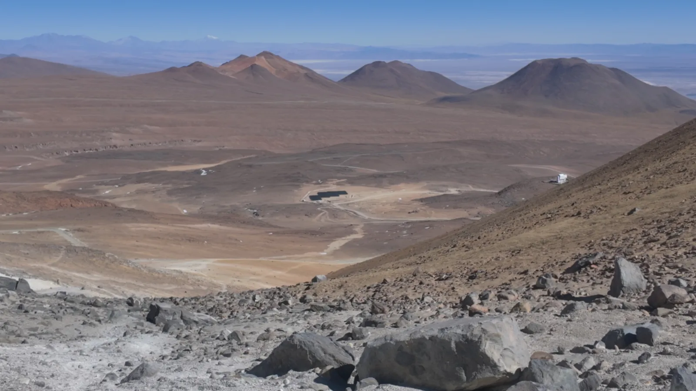
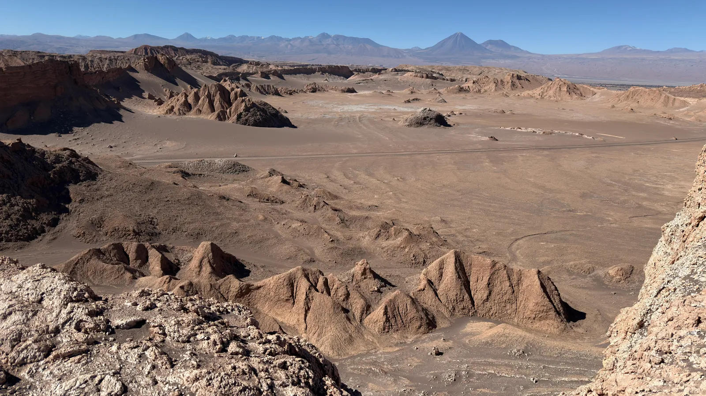

Guias e roteiros de viagem de carro
Tudo o que a gente escreveu, do mais novo para o mais antigo. Busque pelo nome do lugar ou filtre por país.

Viajar sem seguro viagem ou contratar só quando passar mal: o que acontece?
Quem paga o hospital, o que muda na Argentina e por que o seguro comprado depois de ficar doente não cobre.
Ler o post →
Cerro Toco: como foi tentar subir a pé um vulcão de 5.604 m
O carro 4x2 não subiu, seguimos a pé e voltamos a uns 400 m do cume. Altitude, frio, AllTrails e dicas.

Geysers del Tatio: como é o passeio mais frio do Atacama
Saída de madrugada, -14°C no dia em que fomos e gêiseres a mais de 4.300 m. O que levar e como se preparar.
Seguro viagem para Argentina, Chile e Uruguai: é obrigatório e qual a cobertura mínima?
O que cada país exige, qual seguro a Argentina aceita, quanto de cobertura médica contratar, se o seguro do cartão vale e como usar o cupom ESTRADAEMDOIS.

Foz do Iguaçu em 1 dia: dá para ver Cataratas e Itaipu?
Dá, sim. Horários, ingressos e o que saber para encaixar os dois passeios no mesmo dia.

Morro do Fogão, em Itirapina: acampar de graça e ver o pôr do sol
Como chegar saindo de Rio Preto, pedágios, estrutura e as regras para acampar no alto do morro.
Vai entrar na Argentina de carro? Documentos e itens obrigatórios
Documentos, Carta Verde, seguro e o que precisa estar no carro para passar pela fronteira sem susto.
Da Argentina ao Atacama de carro: nosso roteiro
Roteiro parada por parada pelo norte argentino até San Pedro de Atacama.

Valle de la Luna: a paisagem de outro planeta no Atacama
Dunas, paredões e formações que parecem de outro planeta: fotos, vídeo e o essencial para visitar em San Pedro de Atacama.
Nada encontrado. Tente outra palavra ou .